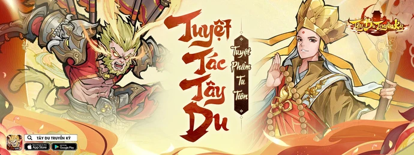
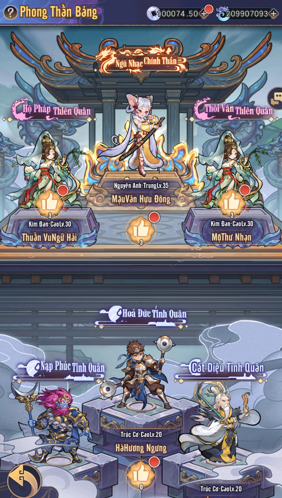
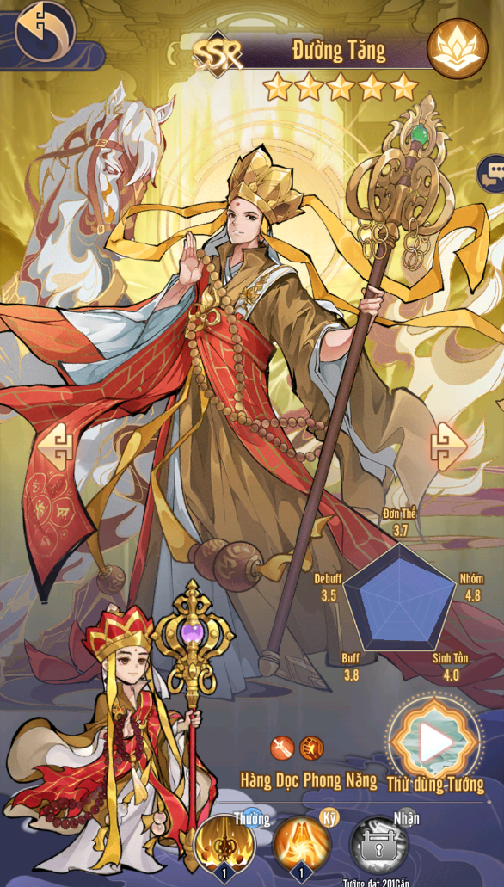

Tây Du Truyền Kỳ Mobile - Game đấu tướng Tây Du Phong Thần kết hợp Tu Tiên sắp ra mắt
Mới đây, CMN Online - nhà phát hành game nổi tiếng với các tựa game mobile thành công - đã khiến cộng đồng game thủ đứng ngồi không yên khi công bố việc ra mắt game mobile Tây Du Truyền Kỳ.
Đây là một tựa game mang đậm dấu ấn của bộ tiểu thuyết kinh điển "Tây Du Ký", kết hợp với những yếu tố phong thần kỳ bí, hứa hẹn sẽ mang đến cho người chơi một trải nghiệm hoàn toàn mới mẻ và hấp dẫn.
Một sự kết hợp đầy mới mẻ giữa cốt truyện Tây Du Ký và Phong Thần Diễn Nghĩa
Một trong những điểm đặc biệt và đáng chú ý nhất trong tựa game Tây Du Truyền Kỳ Mobile của CMN Online chính là sự kết hợp độc đáo giữa hai tác phẩm huyền thoại trong văn hóa Trung Hoa: Tây Du Ký và Phong Thần Diễn Nghĩa. Đây là một quyết định táo bạo và đầy sáng tạo, giúp người chơi có thể hiểu sâu hơn về giai đoạn thần thoại nối tiếp từ Phong Thần sang Tây Du.
Người chơi sẽ được hòa mình vào các trận chiến Phong thần: Tiên Võ Đài, Bảng Phong Thần, Cuộc Chiến Thiên Đạo, Tam Thanh Đại La Thiên, và Tranh Bá Phong Thần, gặp gỡ các nhân vật quen thuộc như Đát Kỷ, Na Tra, Lý Tịnh, Khương Tử Nha, Thân Công Báo, Lôi Chấn Tử…
Và sau khi tham gia định đoạt bảng Phong Thần, người chơi tiếp tục đồng hành của 5 thấy trò Đường Tăng vượt 81 kiếp nạn, hoàn thành quá trình thỉnh kinh đầy trông gai, đồng thời viết tiếp câu chuyện hậu Tây Du đầy kì bí.
Đồ họa game đẹp mắt phong cách truyện tranh thần thoại
Với phong cách đồ họa 2.5D nét vẽ manhua, Tây Du Truyền mang lại hiệu ứng chiều sâu, tạo ra cảm giác như thế giới trong game có sự chuyển động mượt mà và không gian rộng mở. Các chi tiết cảnh vật như rừng rậm, thành quách, ngọn núi, hay làng mạc đều được vẽ tỉ mỉ, đầy màu sắc, sống động, giúp người chơi dễ dàng bị cuốn hút vào thế giới huyền bí của Tây Du Ký và Phong Thần Diễn Nghĩa.
Các Thần Tướng như Tôn Ngộ Không, Đường Tăng, Trư Bát Giới, Sa Tăng, cùng những nhân vật trong Phong Thần Diễn Nghĩa được thiết kế vô cùng chi tiết, từ trang phục, hình dáng đến các cử chỉ, hành động. Mỗi nhân vật không chỉ sở hữu ngoại hình đẹp mắt mà còn thể hiện rõ tính cách và phẩm chất riêng biệt của mình. Việc thức tỉnh Thần Tướng hay thay đổi trang phục cũng được thể hiện một cách sống động, các thần tướng sẽ thay đổi hình dáng trong trận đấu, khiến cho mỗi trận chiến càng trở nên hấp dẫn và cuốn hút.
Tính năng tu tiên hấp dẫn dành cho fan yêu thích tu tiên
Một trong những điểm đặc sắc của Tây Du Truyền Kỳ Mobile chính là tính năng tu tiên nhàn rỗi, cho phép người chơi tự do nâng cao sức mạnh của nhân vật thông qua việc làm nhiệm vụ, thu thập tu vi tăng cảnh giới. Hệ thống tu luyện trong game bao gồm 14 cảnh giới, mỗi cảnh giới ứng với thuộc tính tăng khác nhau. Ngoài ra, người chơi có thể đột phá Kinh Mạch để tăng thêm thuộc tính hoặc thu thập Thần Khí, Linh Thú để sở hữu các kỹ năng kèm các hiệu ứng khác nhau.
Hãy cùng chờ đón tuyệt phẩm game thẻ tướng Tây Du Phong Thần, kết hợp tu tiên sắp ra mắt trong thời gian tới đây. Hiện tại người chơi có thể đăng ký trước game Tây Du Truyền Kỳ trên Appstore và Google Play.
Đăng ký trước: https://taydu.cmn.vn/download
Fanpage: https://www.facebook.com/tayducmn